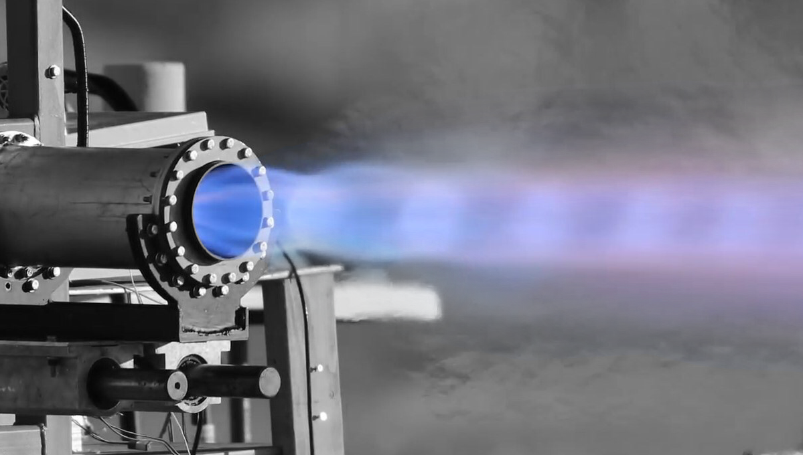
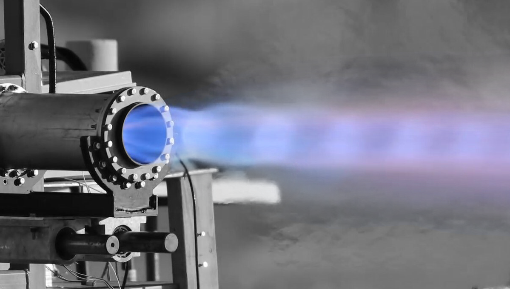
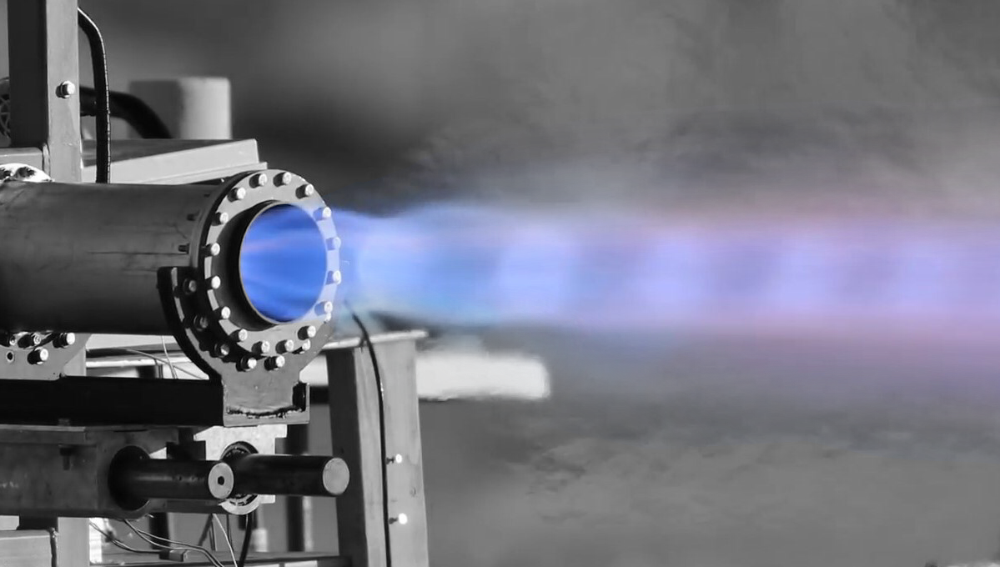

The UCI Rocket project is a team of undergraduate students that is working to break the undergraduate launch record for methalox rockets. After joining the team my sophomore year and successfully launching UCI's first ever methalox rocket, I have since become the Chief Engineer for the team.

UCI's first ever liquid rocket took us six years to launch, and now I am leading our team to create our next rocket in less than three. Since our first launch in Spring of 2023, our team has been designing and testing our next rocket, which we plan to have ready by the Winter of 2026.
I am also the lead developer for the ground station and control center for the rocket. I created the ground station using a Python web service and a React web app to monitor and control the rocket on the pad and during its flight. It also has built in data visualization tools to analyze results or help diagnose issues we encounter during testing.
As Chief Engineer, I led efforts to prepare our rocket for its static fire testing campaign. To reach our target altitude of 25,000 feet, we first needed to validate that the engine and feed system could generate enough thrust and sustain a long enough burn. In the weeks leading up to our first static fire, we performed ten cold flow tests, continuously refining the feed system to maximize our chances of success. Drawing on the experience I gained from developing our previous rocket, I played a key role in identifying and resolving feed system issues, as well as developing new test procedures to verify the system’s performance and reliability.
We performed our first static fire during Week 10 of the Fall quarter, but the test was unsuccessful. Although the engine ignited briefly, it quickly extinguished and ended in an explosive failure.
Our failure analysis revealed that the G10 fiberglass used as our ablative material was separating in large chunks instead of gradually vaporizing as intended. We determined that the inner layer of the G10 had delaminated and become lodged in the nozzle, disrupting combustion and causing the engine to fail. In preparation for the next static fire, we replaced the G10 with a canvas phenolic ablative, which offers more consistent and reliable ablation. We also upgraded our injector design to reduce thermal loading on the chamber walls, minimizing the ablative’s burden in case of excessively high combustion temperatures.
Our next static fire took place during week 10 of the Winter quarter. This time, the engine successfully ignited and completed a full-duration burn. At first glance, the test appeared to be a success. However, post-fire inspection revealed severe damage: the nozzle had fragmented, and the injector had partially melted.
Our failure analysis pointed to vapor-liquid oscillations within the injector, caused by the distance between the main valves and the combustion chamber. This distance created a section of pipes that was exposed to ambient heat which caused partial vaporization of the propellant when the valves opened, creating unsteady flow. This caused the engine to extinguish and relight, generating a shockwave that destroyed the nozzle and caused a leak in the injector. The melted injector was a symptom of this leak, as it compromised the regenerative cooling of the faceplate, resulting in overheating and melting. To fix this, we relocated the main valves directly next to the injector and redesigned the injector to more evenly spread our propellant orifices across the faceplate for more effective cooling.
Our third static fire occurred during week 8 of the Spring quarter. The engine ignited flawlessly, thanks to the improvements we had implemented, but several seconds into the burn, it exploded.
Failure analysis revealed significant backflow through the LOX injector holes, causing them to expand and rupture the LOX manifold. The root cause appeared to be either insufficient back pressure from our feed system or the injector design itself allowing propellants to ignite too close to the injector face and heat it to the point of failure. To address these issues, we are developing two new injectors: a showerhead-style injector to serve as a control to confirm our feed system can generate sufficient backpressure, and a redesigned triplet-impinging injector, using copper for better cooling and a steeper impingement angle to move the combustion zone further from the injector plate. Both will be tested at our next static fire during the Fall of 2025.
After the successful launch of our previous rocket, our team began work on a brand-new vehicle. Building on the lessons learned from the shortcomings of our previous avionics system, I led a complete redesign of our avionics electronics focusing on improving capability and fault tolerance. It was essential that these systems be completed within the year to support the propulsion team’s development and testing efforts, as our electronics were integral for validating their own systems.
I also initiated the development of a new ground control system. The previous setup relied on a physical switch box to actuate valves, which proved to be unreliable and prone to failure. I made the decision to transition entirely to a software-based system to improve reliability and expand our capabilities. The new system uses a Python web service and a React web app to monitor and control the rocket on the pad and during its flight.
The Engine Control Unit(ECU) was designed to be the brain of our rocket. It used a Teensy microcontroller running Arduino(C++) to control valve states and gather temperature and pressure readings on the rocket. I developed the code the ECU used to interpret signals from our ground station and translate them into actuating valves on our rocket.
The Avionics Flight System(AFS) is responsible for radio communication during flight and transmitting telemetry data to the ground station. I developed software AFS used to integrate with the ECU and retrieve solenoid valve states, tank pressures, and tank temperatures using I2C.
I also developed our CLI to allow us to test the rocket without setting up our ground station equipment. The CLI is written in python and uses an internet router connected to the rocket and an open wifi network to allow any laptop to connect to the rocket over wifi. This way, we could actuate valves on the rocket without the need for the switch box.
|

|

|

|